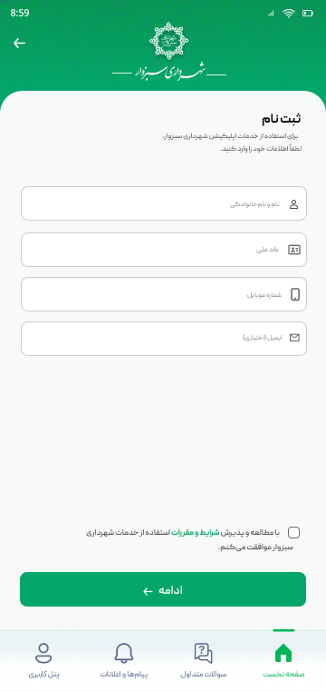
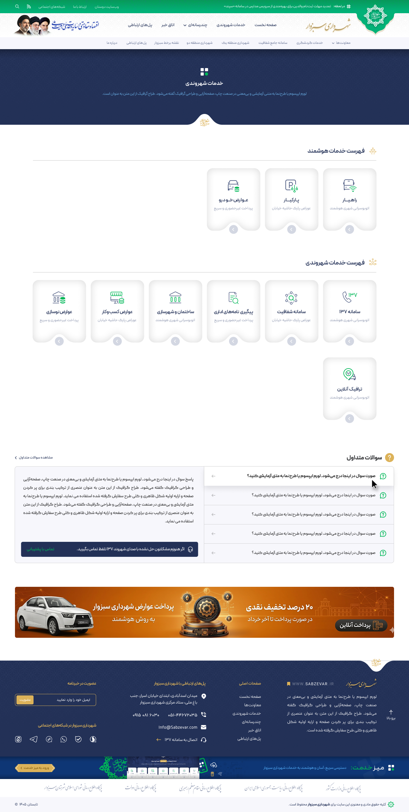

زنده: صفحات جدید
کنار هم
diff (difference)
overlay 50%
بزرگنمایی دسکتاپ
0.5
0.6
0.75
1
…
register.html — ثبت نام (360×761)
Figma reference

ours (live, file: register.html)
citizen-services.html — خدمات شهروندی (1366×2708)
Figma reference

ours (live, file: citizen-services.html)